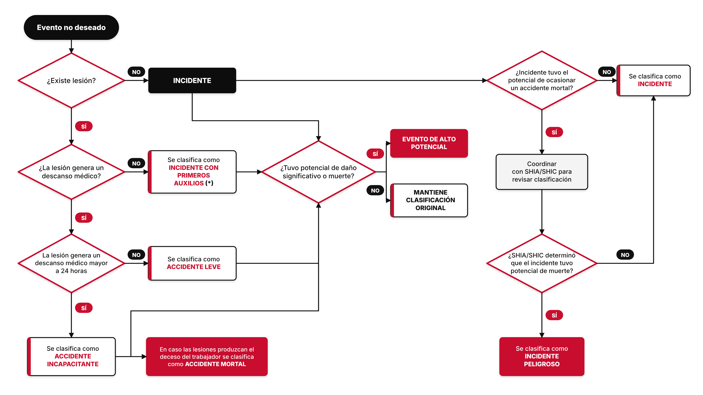

Responda SÍ o NO a cada pregunta. Al final verá cómo se clasifica el evento según el flujograma, y si corresponde reportarlo como evento de alto potencial.

Suceso ocurrido en el curso del trabajo o en relación con él, en el que la persona no sufre lesiones corporales o solo requiere primeros auxilios.
Suceso potencialmente riesgoso que pudiera causar lesiones o enfermedades graves a las personas en su trabajo o a la población.
Lesión que, tras la evaluación médica, genera un descanso breve con retorno, como máximo, al día siguiente a sus labores habituales.
Lesión que, tras la evaluación médica, da lugar a descanso, ausencia justificada al trabajo y tratamiento.
Suceso cuyas lesiones producen la muerte del trabajador.
Evento que, en circunstancias ligeramente distintas, pudo causar un daño significativo o la muerte. Se reporta así además de su clasificación original.
Definiciones resumidas del glosario del D.S. N.° 005-2012-TR, Reglamento de la Ley N.° 29783 de Seguridad y Salud en el Trabajo.